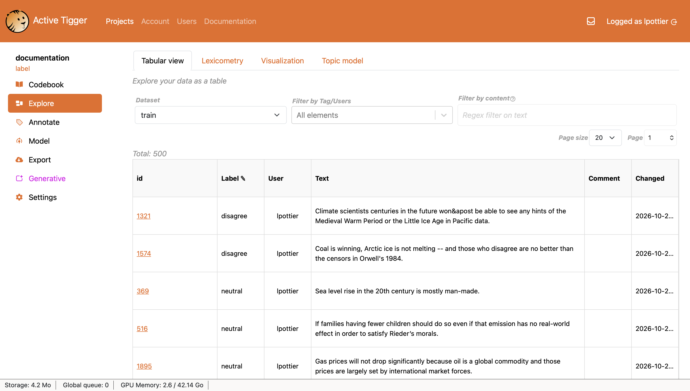
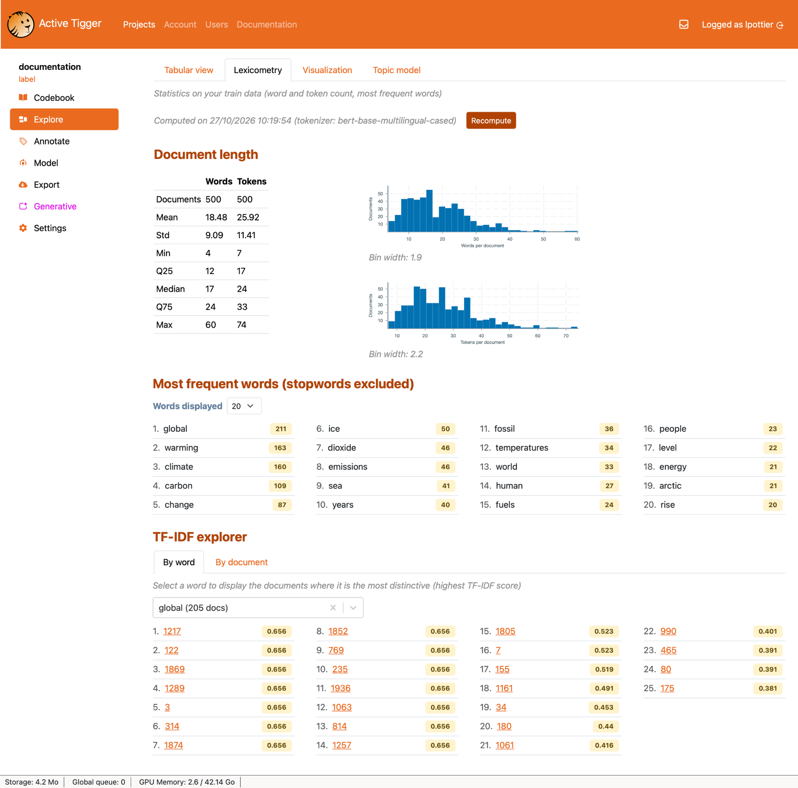
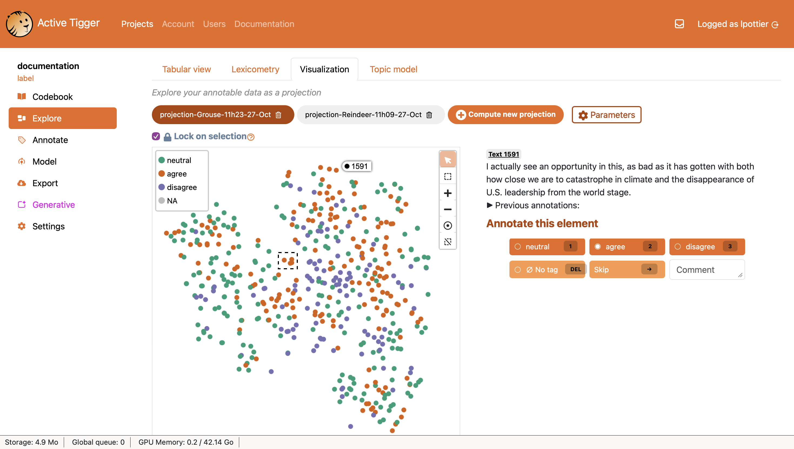
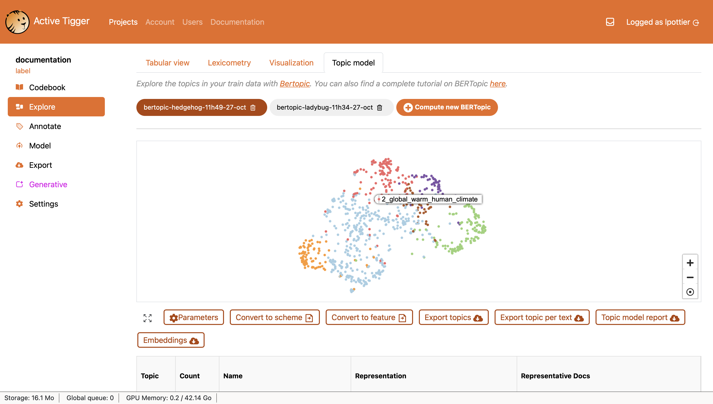

Explore Page
The Explore panel allows to get an overview of your dataset by visualizing your data as a table and computing statistics, projections and topic modeling.
Tabular View
The Tabular view displays your data as a table. Filters are available to assist your exploration.

- The table contains 6 columns including the text id, the assigned label, the user who assigned the label, the text, comments (if any), and the date the label was assigned.
- Click on one id to go to the Annotate page and annotate the selected text input. This is also where you can edit or delete a comment (re-assign the label to save your changes).
-
Double-click on a label cell to annotate in the tabular view. Click Validate changes to save changes in the database.
-
Filters available
- Select the dataset to explore ("train", "validation" or "test").
- Select elements with a given label or annotated by a given user.
- Select elements given a regex query.
Lexicometry
The Lexicometry tab displays various statistics on your "train" data.
Warning
There can only be one lexicometry computation per project.
Be aware that recomputing lexicometrics it will overwrite the current computation.

- Document length: This section provides statistics over word and token counts (using the bert-base-multilingual-cased tokenizer).
- The table shows descriptive statistics over the set of documents.
-
The graphs show the distribution of documents according to their length in words (top graph) or tokens (bottom graph). Information on the histogram's bin width is available underneath.
-
Most frequent words (stopword excluded): This section shows the most frequent words across your train set, with their associated frequency count.
-
TF-IDF explorer: This section uses the TF-IDF measure to display the most significative words in your corpus. TF-IDF scores are computed for each word in each document: a high score means that the word is both highly frequent in the document and rare in the overall corpus.
- By word: displays the first twenty-five documents where the selected word is the word with the highest TF-IDF score, along with the score. In the Select a word menu, you can see the total number of documents in which a given word has the highest TF-IDF score.
- By document: for each document, displays the words that have the highest TF-IDF scores, along with the scores. The table only shows the first fifty documents. You can search for a specific document using its id.
Visualization
The Visualization tab displays a projection of the embedding space in two dimensions. Projections are computed with either UMAP or t-SNE.

-
Compute new projection
- Name: unique name (per project) for the projection.
- Select a feature: choose the set of feature (what are features?) to use for the projection. If choosing several sets of features, they will be concatenated before projection.
Add a new feature to Compute new features. - When Select a model is UMAP (default):
- n_neighbors: defines the size of a neighborhood, hence whether two points are considered as "close" and should be kept together in the process or not.
- min_dist: aesthetic parameter for how close the kept points should be represented. Low values generate denser representations.
- When Select a model is t-SNE:
- perplexity: controls the effective number of neighbors that each point considers during the dimensionality reduction process (more information).
- Feature scaling: this method normalizes the range of independent variables (i.e. each feature) (should I scale my features?).
-
Parameters to see the parameters of the current projection.
-
The visualization panel displays each text input in a 2D space. By default, the color of the node depends on the label. However, if an active learning model is selected in the Annotation page, you can choose to color the nodes along the predictions of the said model ( Color by: menu).
- to select a subset of text inputs in a frame.
- removes the frame.
- If a frame exists, Lock on selection to lock on the frame. This will induce the Annotate page to only display elements in the frame.
- Clicking a node displays the text input as well as previous annotations and the Annotation Panel, much like in the Annotation page
Projection nodes' coordinates can be downloaded from the Export page.
Topic model
The Topic model section displays existing topic models on the "train" dataset (for a given project, across all users) and allows to compute new ones with BERTopic1.
The visual representation of the topics displays each text input as a node with a color corresponding to the topic generated by the topic model.

-
Compute new BERTopic to create a new topic model.
- Name: unique name (per project) for the computation.
- Embeddings feature: choose an already-computed sentence-embedding feature. To use a different embedding model, first compute it from the Features tab of the Settings.
- Number of neighbors: dimension reduction parameter from theUMAP algorithm. Low values will generate a topic model focusing on local structures (i.e. very specific topics) whereas higher values will generate a topic model focusing on the overall structure (i.e. general topics) (more information).
- Min topic size: clustering parameter from the HDBSCAN algorithm. This parameter corresponds to the minimum number of elements in a group to be considered a cluster, otherwise the group is considered as noise. Increasing this value will generate a few large topics, while decreasing this value will generate many small topics.
- Outlier reduction: if ticked (default), all text inputs considered as noise will be added to the closest topic (more information).
- Input dataset: which dataset should be used to fit the model (train or train + test + valid).
- Filter out texts of length lower than: before fitting the model, exclude text inputs of length inferior to this value.
- Number of components: dimension reduction parameter from the UMAP algorithm. It defines the number of dimensions that the algorithm reduces the embeddings to. Low values flatten the representation of the input texts, whereas higher values maintain a richer representation (more information).
-
Parameters to see the parameters of the current topic model.
- Convert to scheme to create a scheme and assign labels using the topics generated. Topic-generated labels should be used with caution and carefully reviewed, since they are not based on human annotation.
- Convert to feature to create a new feature based on the embeddings of the current topic model.
- Export topics to download the topic table displayed underneath (in CSV format).
- Export topic per text to download a mapping of each element id2 to the topic index it corresponds to (in CSV format).
- Topic model report to download an HTML report with key insights (topics description, 2D map, hierarchical representation, representative documents and parameters of the model).
-
Embeddings to download the embeddings of the current topic model (in parquet format).
-
The table summarises the topic model.
- Topic: the topic id.
- Count: the number of elements in the topic.
- Name: a standard name for the topic.
- Representation: a list of keywords that represent the topic.
- Representative docs: a list of documents that are at the core of the topic generated.
-
Find a full tutorial on BERTopic for the social sciences here. ↩
-
As set up when creating a project. ↩